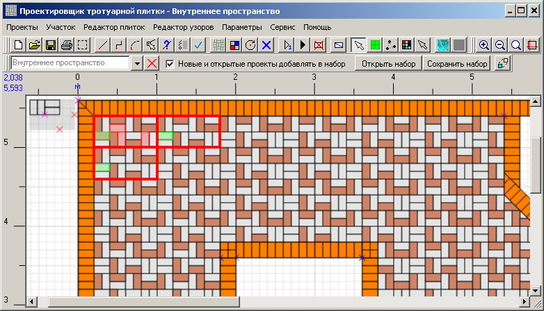
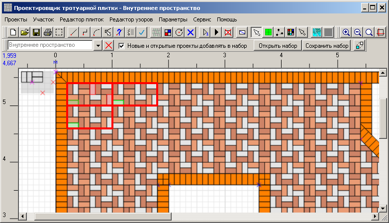

Проектировщик тротуарной плитки 2.2
Заполнение плиткой основного пространства
Так выглядит рабочий проект после создания окантовок.

Теперь надо нарисовать границы внутреннего пространства. На рисунке ниже они показаны синим.
В этих условиях есть несколько способов нарисовать границы.
Устанавливаем начальную точку в нижний левый угол и заполняем плиткой .
.
Теперь нужно раскрасить плитки. Предварительно прочитайте о том, как создать и сохранить для дальнейшего использования собственные цвета. Предположим, цвета уже созданы, как написано. Надо загрузить их в проект.
Увеличим масштаб, чтобы было нагляднее.
Раскрашивать будем ограниченный фрагмент по шаблону. Этот шаблон распространится по всему пространству проекта. Мысленно (мысленно!) разделим пространство на одинаковые фрагменты. На первый взгяд нужно разделить пространство на прямоугольники, равные по размеру узору.
Но давайте присмотримся. Фрагменты в чётных рядах не аналогичны фрагментам в нечётных рядах. В них плитки уложены по-разному. Значит, не получится распространить цветовой шаблон на все фрагменты.
На самом деле делить надо так:
Или так:
Выбираем первый вариант. Выбираем инструмент "Выделить плитку" и выделяем плитку.
и выделяем плитку.
И выбираем такие же плитки в соседних фрагментах по двум разным направлениям. (По двум - потому что фрагменты расположены в ячейках четырёхугольной сетки. Если бы мы заполняли поле шестиугольными плитками, то фрагменты располагались бы в ячейках шестиугольной сетки, и от первой выделенной плитки пришлось бы задавать выделение остальных плиток в трёх различных направлениях)
Нажимаем кнопку "Размножить выделение" .
.
Открываем диалог выбора цвета и выбираем первый созданный нами цвет.
Все выделенные плитки сменят цвет и останутся выделенными:
Нажимаем кнопку "Сбросить выделение" . Получим цветные плитки по всему пространству:
. Получим цветные плитки по всему пространству:
Повторяем те же операции для второй плитки шаблона. Выделяем:
Выбираем цвет:
Сбрасываем выделение и получаем:
Повторяем то же самое для оставшихся двух плиток шаблона, раскрашиваем оставшимися двумя цветами.
Уменьшаем масштаб, оцениваем проект.
Как-то не очень.
Сейчас будем переделывать. Для этого нужно очистить плитки от раскраски. Есть два способа сделать это: и обводим
мышкой все плитки, удерживая левую кнопку:
Когда отпустим кнопку мышки в правои нижнем углу, все плитки окажутся выделенными: Напомним: у нас сейчас активным проектом явлется "Внутреннее пространство". Поэтому, выделились только его плитки, хотя мы и обвели мышкой всё, включая плитки окантовки.
Открываем диалог выбора цвета и выбираем цвет плиток по умолчанию.
Или так:
Будем раскрашивать по первому варианту. Выделяем плитки как показано ниже, причём первой выделяем самую левую верхнюю плитку:
Нажимаем кнопку "Запомнить выделенные плитки" . Плитки выделяются красным, а первая из них выделяется ещё и зелёным:
Это означает, что выделенные плитки объединились в группу и первая плитка стала опорной плиткой группы. Выделяем в соседних фрагментах опорные плитки. Они в своих фрагментах расположены там же, где опорная плитка в своём фрагменте.
Нажимаем кнопку "Размножить выделение". По всему пространству выделятся группы
плиток.
Открываем диалог выбора цвета и выбираем первый созданный нами цвет.
Нажимаем кнопку "Сбросить выделение". Получим цветные плитки по всему пространству:

Раскрашиваем плитки в шаблоне под второй цвет. Повторяем те же шаги. Выделяем плитки:
Нажимаем кнопку "Запомнить выделенные плитки" . Выделяем в соседних фрагментах опорные плитки.
Нажимаем кнопку "Размножить выделение". По всему пространству выделятся группы
плиток.
Открываем диалог выбора цвета и выбираем второй цвет.
После этого сбрасываем выделение и получаем такую картину.
Выделяем плитки в шаблоне под третий цвет и раскрашиваем их.

Выделяем плитки в шаблоне под четвёртый цвет и раскрашиваем их.
В финале получаем вот такую замысловатую расцветку.
Теперь надо нарисовать границы внутреннего пространства. На рисунке ниже они показаны синим.
В этих условиях есть несколько способов нарисовать границы.
- В этом уроке мы уже рассматривали как рисовать с помощью диалога рисования линий.
- Просто нарисовать линии, как описано в справочном руководстве. При этом прийдётся обводить контуры макета. А для этого нужно точно попадать мышкой в опорные точки, что непросто сделать при маленьком масштабе. А при большом масштабе концы опорной линии могут оказаться за пределами экрана и провести линию из конца в конец не получится.
- Для решения проблемы, упомянутой в предыдущем пункте, удобно рисовать с помощью мини-дисплея.
Устанавливаем начальную точку в нижний левый угол и заполняем плиткой
.
Теперь нужно раскрасить плитки. Предварительно прочитайте о том, как создать и сохранить для дальнейшего использования собственные цвета. Предположим, цвета уже созданы, как написано. Надо загрузить их в проект.
Увеличим масштаб, чтобы было нагляднее.
Раскрашивать будем ограниченный фрагмент по шаблону. Этот шаблон распространится по всему пространству проекта. Мысленно (мысленно!) разделим пространство на одинаковые фрагменты. На первый взгяд нужно разделить пространство на прямоугольники, равные по размеру узору.
Но давайте присмотримся. Фрагменты в чётных рядах не аналогичны фрагментам в нечётных рядах. В них плитки уложены по-разному. Значит, не получится распространить цветовой шаблон на все фрагменты.
На самом деле делить надо так:
Или так:
Выбираем первый вариант. Выбираем инструмент "Выделить плитку"
и выделяем плитку.
И выбираем такие же плитки в соседних фрагментах по двум разным направлениям. (По двум - потому что фрагменты расположены в ячейках четырёхугольной сетки. Если бы мы заполняли поле шестиугольными плитками, то фрагменты располагались бы в ячейках шестиугольной сетки, и от первой выделенной плитки пришлось бы задавать выделение остальных плиток в трёх различных направлениях)
Нажимаем кнопку "Размножить выделение"
.
Открываем диалог выбора цвета и выбираем первый созданный нами цвет.
Все выделенные плитки сменят цвет и останутся выделенными:
Нажимаем кнопку "Сбросить выделение"
. Получим цветные плитки по всему пространству:
Повторяем те же операции для второй плитки шаблона. Выделяем:
Выбираем цвет:
Сбрасываем выделение и получаем:
Повторяем то же самое для оставшихся двух плиток шаблона, раскрашиваем оставшимися двумя цветами.
Уменьшаем масштаб, оцениваем проект.
Как-то не очень.
Сейчас будем переделывать. Для этого нужно очистить плитки от раскраски. Есть два способа сделать это:
- Радикальный. Удалить все плитки
 и заполнить проект заново.
и заполнить проект заново.
- Присвоить всем плиткам начальный серый цвет.
и обводим
мышкой все плитки, удерживая левую кнопку:
Когда отпустим кнопку мышки в правои нижнем углу, все плитки окажутся выделенными: Напомним: у нас сейчас активным проектом явлется "Внутреннее пространство". Поэтому, выделились только его плитки, хотя мы и обвели мышкой всё, включая плитки окантовки.
Открываем диалог выбора цвета и выбираем цвет плиток по умолчанию.
Раскрашивание плиток группой
Выбираем масштаб покрупнее, чтобы было удобно работать с выделением плиток. Чтобы получить цветной узор покрасивее, нужно выбирать фрагменты покрупнее.Или так:
Будем раскрашивать по первому варианту. Выделяем плитки как показано ниже, причём первой выделяем самую левую верхнюю плитку:
Нажимаем кнопку "Запомнить выделенные плитки" . Плитки выделяются красным, а первая из них выделяется ещё и зелёным:
Это означает, что выделенные плитки объединились в группу и первая плитка стала опорной плиткой группы. Выделяем в соседних фрагментах опорные плитки. Они в своих фрагментах расположены там же, где опорная плитка в своём фрагменте.
Нажимаем кнопку "Размножить выделение"
. По всему пространству выделятся группы
плиток.
Открываем диалог выбора цвета и выбираем первый созданный нами цвет.
Нажимаем кнопку "Сбросить выделение"
. Получим цветные плитки по всему пространству:
Раскрашиваем плитки в шаблоне под второй цвет. Повторяем те же шаги. Выделяем плитки:
Нажимаем кнопку "Запомнить выделенные плитки" . Выделяем в соседних фрагментах опорные плитки.

Нажимаем кнопку "Размножить выделение"
. По всему пространству выделятся группы
плиток.
Открываем диалог выбора цвета и выбираем второй цвет.
После этого сбрасываем выделение и получаем такую картину.
Выделяем плитки в шаблоне под третий цвет и раскрашиваем их.

Выделяем плитки в шаблоне под четвёртый цвет и раскрашиваем их.
В финале получаем вот такую замысловатую расцветку.